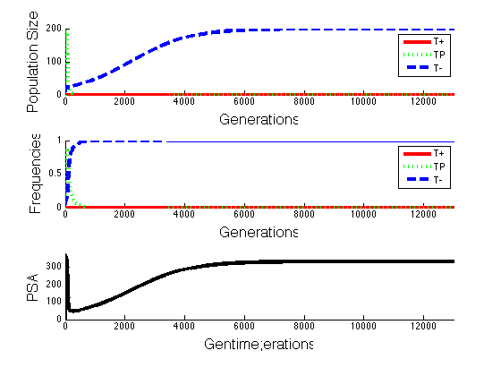

all_p(end, :);
time = time-1
disp('Creating figure')
figure
subplot(3, 1, 1)
hold on
plot(1:time, all_x(:,1), 'r' , 'LineWidth', 4, 'DisplayName', 'T+');
plot(1:time, all_x(:,2), ':g' , 'LineWidth', 4, 'DisplayName', 'TP');
plot(1:time, all_x(:,3), '--b' , 'LineWidth', 4, 'DisplayName', 'T-');
xlabel('Generations', 'FontSize', 16)
ylabel('Population Size', 'FontSize', 16)
xlim([0 time])
xlim([0 13000])
legend ({'T+' 'TP' 'T-'})
subplot(3, 1, 2)
hold on
plot(1:time, all_p(:,1), 'r' , 'LineWidth', 4, 'DisplayName', 'T+');
plot(1:time, all_p(:,2), ':g' , 'LineWidth', 4, 'DisplayName', 'TP');
plot(1:time, all_p(:,3), '--b' , 'LineWidth', 4, 'DisplayName', 'T-');
xlabel('Generations', 'FontSize', 16)
ylabel('Frequencies', 'FontSize', 16)
xlim([1 time-1])
xlim([0 13000])
ylim([0 1]);
legend ({'T+' 'TP' 'T-'})
subplot(3, 1, 3)
hold on
plot(1:time, all_PSA, 'k' , 'LineWidth', 4);
xlim([0 time])
xlim([0 13000])
ylim([0 max(all_PSA) + 10])
xlabel('Gentime;erations', 'FontSize', 16)
ylabel('PSA', 'FontSize', 16)
time =
50000
Creating figure
